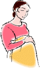

|
|
|
- learn to parent effectively |
|
 |
Stress in Womb
Can Alter Life Later
Mom-baby bonding is
a factor
LiveScience Staff
via
Yahoo Online News - 2/27/10 |

 The Web address of this article is
http://sfhelp.org/parent/news/fetus.htm The Web address of this article is
http://sfhelp.org/parent/news/fetus.htm
Updated
04-18-2015
Clicking underlined links here will open a
new window. Other links will open an informational popup,
so please turn off your
browser's popup blocker or allow popups from this nonprofit Web site.
If your playback device doesn't support Javascript, the popups may not display.
Follow underlined links after
finishing this article to avoid getting lost.
This research supports the premise that
low-nurturance early environments can promote life-long psychological
injuries in young kids. Maternal "stress" during pregnancy and after
delivery may detract from child nurturance, It can be one or more of these:
significant anxiety ("worry"), frustration, guilt, shame, anger, confusion,
grief, and/or overwhelm. See my comments after the article. Links and
hilights below are mine. - Peter K. Gerlach,
MSW
+ + +
A stressed pregnant
woman might put her infant at risk for cognitive problems later in life.
But a mother's nurture could protect against this risk, a new study finds.
The research provides the first direct human evidence that fetuses exposed
to elevated levels of the stress hormone cortisol, which possibly
gets released in the mother's body when she's stressed out,
could have trouble paying attention
or solving problems as they grow up. But what may be more intriguing
is that this negative link disappears almost entirely if the mother forges a
secure connection with her baby.
Future studies are needed to confirm
the findings, said study author Thomas O'Connor, a professor of
psychiatry and psychology at the University of Rochester Medical Center in
New York.
Good Parenting
O'Connor and his colleagues recruited 125 pregnant women, who were at 17
weeks gestation on average, and took samples of their amniotic fluid so that
stress hormones levels could be measured.
When their children reached 17 months of age, researchers tested cognitive
abilities with puzzles, pretend play, and baby memory challenges.
They also watched the baby and mother interact. Using the Ainsworth "Strange
Situation" test, which judges childrearing quality,
the researchers categorized these
mom-baby pairs as either showing secure or insecure
to each other.
Secure children will be able
to explore their surroundings while their mother is around, and will be sad
if the mother leaves and happy when she comes back.
Insecure children do not
explore as much, and exhibit other insecure behaviors, such as showing no
emotion when the mother leaves or returns, or becoming very anxious when
she goes away, yet resisting her affection upon reunion.
|
For the insecure
mom-baby pairs, the moms who had higher prenatal stress-hormone
levels were more likely to have kids with shorter attention spans
and weaker language and problem-solving skills. But for kids who had
secure relationships with their moms, any negative link between high
prenatal cortisol exposure and kids' cognitive development was
eliminated. |
"Pregnancy is an emotional
experience for many women, and there is already so much for mothers to be
careful of and concerned about," O'Connor said. "It's a relief to learn
that, by being good parents, they
might 'buffer'' their babies against potential setbacks."
Fetal programming
The results agree with the theory of "fetal programming," the idea that
events in the womb could prime the developing child for long-term health and
developmental outcomes. Past studies, for instance, have found a pregnant
mother's diet can sway a child's long-term risk for heart disease, diabetes
and obesity.
However, the researchers note it is hard to tell whether high levels of
stress hormone result from an anxious mother or are excreted directly from
the fetus itself.
They hope to follow up with the children at age 6 to see the long-term
effects of in-utero cortisol levels and parenting style. The tests would
include imaging studies of the children's brains.
The results were published
online Feb. 25, 2010 in the journal Biological Psychiatry.
The research was funded by March of Dimes and the National Institute of
Mental Health.
 Comments
Comments
This study's results support the premise that "low nurturance
parenting" (starting in the womb) can promote a baby's becoming a
. It is significant that in 2010, this is described as "the first direct
human evidence" that stress in pregnancy can hinder some aspects of fetal
development. The summary doesn't define "stress."
The study also didn't examine the
causes of elevated maternal cortisol levels. They might be...
-
normal internal stress (worry and
discomfort) about the gestation and birth process, and/or...
-
situational (environmental) stress from
other spousal and family issues, and/or...
-
the
mother being psychologically
(e.g. chronically anxious, guilty, shamed, and frustrated) -
perhaps a legacy of her own low-nurturance childhood.
The findings suggest that prenatal stress (cortisol levels) and insecure
mom-baby bonding were related to hindered development in the growing child.
From
36 years professional research, I propose that difficulty bonding
(Reactive
Attachment Disorder or RAD) is one of six psychological
acquired
from significant early-childhood abandonment, neglect and abuse (trauma).
If
a mother has "significant" wounds, she may be unable to bond with her infant - who then may be
at risk of developing its own wounds as it grows. Ignorance and denial of
this is the heart of the unseen epidemic [wounds + unawareness]
Many other factors affect this possibility, such as other nurturing
family members, adoption, and environmental stressors.
Implication: before
conceiving kids, women should assess whether (a) they are prone to
chronic stress (i.e. whether they bear psychological wounds) - and if
so, (b) whether they are able to bond well. If not, pregnancy may put their
infants at major risk of RAD and major life-long personal and social
problems.
|
Another implication - because average young couples (a) don't
know what this cortisol / bonding study found, and (b) don't
want to know they bear major psychological wounds, RAD will
continue to pass down the generations until societies require
some form of mental-health-testing for potential parents.
|
As Dr. O'Connor says, much more research on maternal stress,
bonding, and
child development is needed. - Peter K. Gerlach
MSW
self-improvement Lesson 1 in this non-profit Web site explores
psychological wounding and wound-recovery. Lesson 6 explores
effective parenting.
<<
Related research summaries
>>
 /
Prior page /
Lesson 6 /
Print page
/
Prior page /
Lesson 6 /
Print page
site
intro /
course outline /
site search /
definitions / chat
|